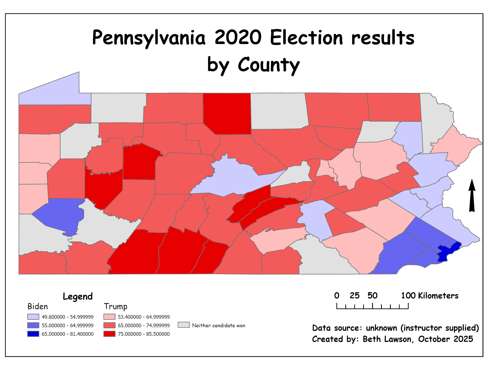

2020 was quite the year, wasn't it?
Pandemics aside, one of the most divisive elections in recent U.S. history took place during this most...memorable of years. Here is how counties in the Keystone State landed:
 Ain't the Electoral College interesting?What story does this map tell?
This map shows how population density matters in terms of elections. The state appears largely red, but the concentrations of blue are what swung the state towards the Democratic candidate. Elections maps such as this beg the question of how the United States electoral college works.
Skills Utilized
More tinkering with classes to display data in a way that makes sense.
Making a damn sexy map.
This mapping project gave me the opportunity to explore the nuances of using choropleth maps to show differences in density. Playing with classes and color scales allows us to show variations in the intensity of certain data sets in specific areas.
· Image by iStock by Getty Images